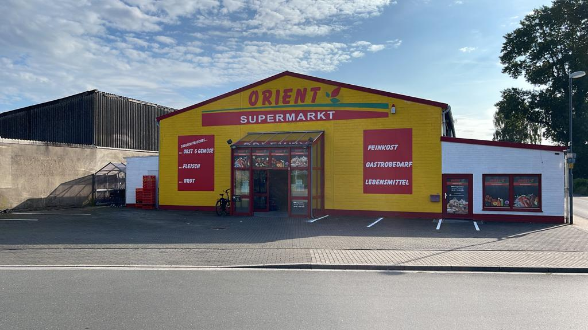

Orient Supermarkt
Traditioneller Genuss. Entdecken Sie die besten Waren und Gewürze aus aller Welt.

Unsere Exklusive Auswahl
Wir sind stolz darauf, die authentischen Aromen verschiedener Regionen direkt in Ihre Küche zu bringen. Bei uns finden Sie die ganze Vielfalt der türkischen, arabischen, persischen, pakistanischen und Balkan-Küche.
Unsere Highlights:
- ★ Frischeste Produkte: Täglich frisches Obst & Gemüse
- ★ Die Fleischtheke: Frisches Halal-Fleisch aus eigener Metzgerei
- ★ Grundnahrungsmittel: Premium Basmati Reis & Hülsenfrüchte
- ★ Die Backwaren: Täglich frisches Brot von türkischen Bäckereien
- ★ Der Klassiker: Original türkischer Schwarztee
NEU: Gastronomieservice! Wir liefern Produkte in Großmengen an Restaurants und Imbisse.
Unsere Produktwelten im Detail
Frisches Fleisch
Halal-Qualität aus unserer eigenen Metzgerei - täglich frisch und geprüft. Von Rind bis Lamm.
Frisches Brot
Tägliche Lieferung von traditionellem türkischem Brot, Fladenbrot und ofenfrischen Spezialitäten.
Obst & Gemüse
Saisonale Vielfalt, direkt und knackfrisch für Ihre gesunde Küche und traditionelle Gerichte.
Konserven
Vielfältige Eingelegtes, Tomatenmark, Oliven und Fische aus dem gesamten Orient und Balkan.
Molkereiprodukte
Spezialitäten wie Ayran, hochwertiger Feta, traditioneller türkischer Joghurt und Käsesorten.
Wurstwaren
Ausgewählte Halal-Wurst- und Aufschnittspezialitäten für Frühstück und Zwischenmahlzeiten.
Trockenlebensmittel
Reis, Bulgur, Hülsenfrüchte, Nüsse und Gewürze – die Basis für jedes authentische orientalische Gericht.
Unsere Reise in Kevelaer
Der Orient Supermarkt (damals Sosan Markt) wurde 2007 als Familienunternehmen in Kevelaer gegründet. Seitdem verfolgen wir die einfache Mission, Kontinente durch Lebensmittel zu verbinden und die besten Zutaten des Orients zugänglich zu machen.
Als Familienbetrieb pflegen wir stets den persönlichen Kontakt zu unseren Kunden. Wir sind mehr als nur ein Geschäft – wir sind ein Treffpunkt, an dem jedes Produkt eine Geschichte erzählt.
Meilenstein 2023: Umzug und Vergrößerung auf 1000m² in Kevelaer!
Wir setzen uns weiterhin für höchste Qualität ein, die unsere Esskultur reich und vielfältig machen.
Besuchen & Kontaktieren Sie uns
Nehmen Sie Kontakt auf
Adresse: Ladestraße 19, 47623 Kevelaer
Telefon: (02832) 404767
E-Mail: orientsupermarkt@outlook.de
Auf Instagram folgenUnser Standort
Route berechnen (Ladestraße 19, Kevelaer) →Rechtliche Informationen
Unternehmen: Orient Supermarkt UG (haftungsbeschränkt)
Vertreten durch: Abdulkerim Akpinar, Kadir Yilmazer
Gericht, Register art und Nummer: Amtsgericht Kleve, HRB 20048